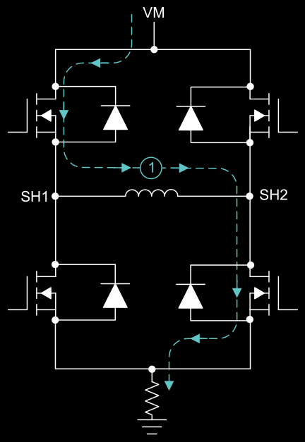

DRV8262DDWR brushed DC motor driver.
A current limit can be set with an adjustable external voltage reference.
The H-bridge shorts the bottom two switches. This creates a closed loop for the motor's energy, essentially acting as a magnetic brake during the "OFF" microseconds.The device also provides output current proportional to the motor current for each H- bridge.Integrated sensing removes the need for shunt resistors, reducing board area and system cost.
